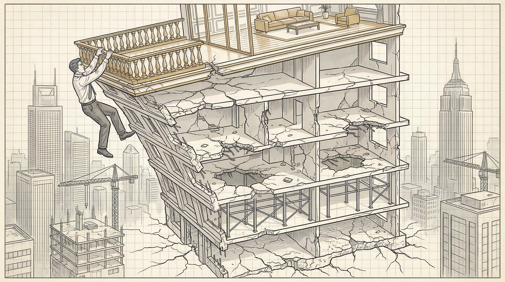
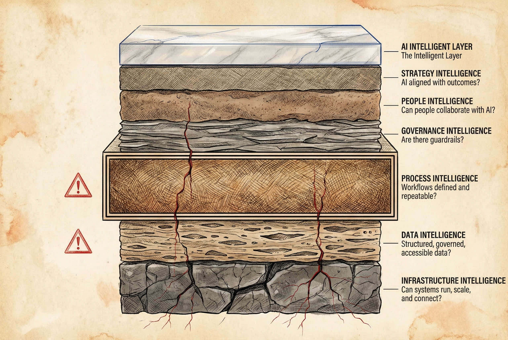
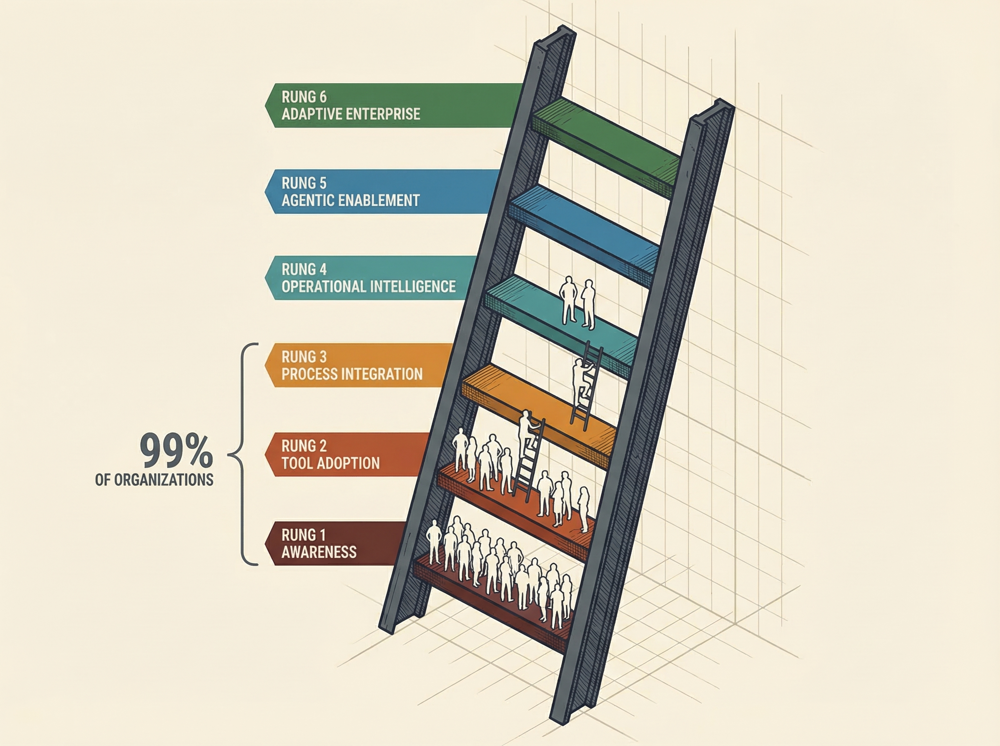

For leaders who watched an AI pilot quietly die
Stop Building the Penthouse on a One-Story Foundation
The Layers & Ladders framework reveals the six structural floors AI requires — and the six-rung maturity ladder that shows exactly where you are in the climb.

Everyone is building the penthouse. Nobody is building the floors.
AI copilots. Autonomous agents. Intelligent automation. The top floor is gorgeous — every vendor has a brochure for it, every board meeting asks about it. But 80% of AI projects fail, and it is not the technology's fault.
This is for the VP of Operations who pitched an AI pilot that quietly died. The Director who watched a promising tool go unused six weeks after launch. The COO who has been asked three times for an "AI strategy" and still does not have a good answer.
If you have struggled with:
- Your team drowning in manual work, but headcount requests denied — again
- An AI tool that was supposed to save hours, and nobody adopted it
- Credibility on the line because the last initiative did not deliver
Build the floors first. Here is what changes:
- You stop guessing which AI investment will work and start diagnosing which foundation is weak
- You delegate to AI agents with confidence because the handoff points are designed, not hoped for
- Your results compound instead of collapse — because each layer reinforces the next
You cannot apply an intelligent layer on top of an unintelligent foundation. Here is how to build it.
The Pattern That Keeps Repeating
The Script
The failure is not random. It follows a script. A company gets excited about AI. Leadership attends a conference or reads a report. Budget appears. A pilot launches. The technology works in the demo. The team is optimistic.
Then it stalls. Not with a dramatic failure. With a quiet fade. The pilot stays in "testing." Adoption drops. The data is messier than expected. Nobody owns the process the AI was supposed to improve. Six months later, the project is shelved and the conversation moves to the next shiny tool.
The Counter-Example
Toyota Motor North America provides the counter-example. When they deployed agentic AI for supply chain planning, they did not start with the AI. They started with process documentation. Toyota's production system had spent decades making every workflow explicit, every decision point defined, every handoff structured.
Forecast accuracy improved 20%. Planner productivity jumped 18%. They transitioned 40-50 planners from spreadsheet-heavy workflows to an agent-assisted model — and it worked because the Process Intelligence layer was already mature.
"Toyota did not have a technology advantage. They had a foundation advantage."
That observation — repeated across dozens of successful and failed AI deployments — is what led to the framework you are about to learn. The organizations that succeed at AI are not the ones with the best tools. They are the ones with the strongest floors beneath them.
The Six Layers: What Must Exist Before AI Works
AI is not magic. It is a cognitive layer that sits on top of six structural foundations. Weakness in any one of them creates a ceiling on what AI can do. Most organizations treat AI as a tool decision. It is a structural decision — it touches how data flows, how processes run, how people work, how risk is governed, and how strategy is defined.
Here are the six layers. Each one has a diagnostic question. If you cannot answer it confidently, that layer needs work before your next AI investment.

The Six Structural Layers
Infrastructure → Data → Process → Governance → People → Strategy → AI
Layer 1: Infrastructure Intelligence
Cloud architecture. APIs. Identity and access management. Compute capacity. This is the plumbing. If it leaks, nothing above it holds pressure. This layer gets the most investment — and also exposes the trap: 86% of organizations say legacy tools that cannot support modern AI are a significant barrier. Throwing money at infrastructure without addressing the layers above it does not solve the problem.
Layer 2: Data Intelligence
Clean data. Defined ownership. Metadata. Pipelines. Versioning. AI does not create truth. It amplifies whatever exists. Feed it ambiguous data and you get confident-sounding ambiguity at scale.
Layer 3: Process Intelligence
This is the layer that gets the least attention — and fails the most AI initiatives. You cannot automate ambiguity. If a process exists only in someone's head, an AI agent cannot execute it. If a workflow has no defined success criteria, there is no way to verify whether an agent performed it correctly.
A Flow Bridge is a structured transition point between human work and agent work — or between agents. In traditional process mapping, you model steps. In agentic process design, you model bridges. Because the risk is not in the step. The risk is in the transition.
A strong Flow Bridge is: Clear (inputs and outputs are explicitly defined artifacts) · Verifiable (validation logic matches the risk level) · Recoverable (there is a defined rollback, retry, or escalation path).
Without Flow Bridges, agents overreach, humans over-review, bottlenecks multiply, and trust collapses. With them, autonomy increases safely and delegation compounds.
A Drift Signal is an observable indicator that something has shifted in an agent's performance. The capability boundary moved. A failure pattern changed. A Flow Bridge needs redesign. Verification thresholds need recalibration.
Drift Signals include unexpected agent success, subtle output degradation, changes in escalation frequency, error clustering by task type, and increased human rework at specific bridges. Every Drift Signal updates your failure model, your verification logic, and your autonomy level — your living operational intelligence loop.
The Agent Enablement Ladder — 7 Levels of Autonomy
Autonomy increases only when verification evidence and controls mature — not through optimism. Through evidence.
Layer 4: Governance Intelligence
Most leaders get the paradox backwards: governance does not slow AI down. Organizations with mature AI governance keep projects operational for 3+ years at more than double the rate of low-maturity organizations (45% vs. 20%). Governance prevents the credibility-destroying failures that end AI programs entirely. Only 28% have formally defined oversight roles for AI governance.
Layer 5: People Intelligence
AI transformation is behavioral before it is technical. The most sophisticated model in the world produces nothing if the people around it do not know how to direct it, verify it, or trust it appropriately. Fifty-two percent of organizations lack AI skills entirely.
Layer 6: Strategy Intelligence
Clear economic intent. Prioritized use cases. An investment thesis. Value measurement. The tools are everywhere. The strategy is not.
The Ladder: How High You Have Climbed
Layers describe structure — what must exist. The ladder describes maturity — how far along you are. You do not jump to the top rung. You climb. And how fast you climb depends on the strength of your layers.

The Six-Rung Maturity Ladder
A gap in any layer creates a ceiling on how high you can safely climb.
The diagnostic question is always two-part: Which layers are weak? What rung are you on? The prescription follows: strengthen the weakest layer that is blocking the next rung.
Five Ways This Plays Out
Toyota Motor North America — Process Intelligence as the Launching Pad
Situation: Toyota did not start their agentic AI journey with AI. They started with decades of process documentation through the Toyota Production System — every workflow explicit, every decision point defined, every handoff structured.
Action: Deployed AI-assisted supply chain planning with AWS and Deloitte. Transitioned 40-50 planners from spreadsheet-heavy workflows to an agent-assisted model. Toyota had every Flow Bridge defined before the first agent touched a workflow.
Result: Forecast accuracy improved 20%. Planner productivity increased 18%. 10,000 hours saved annually. The AI did not create the advantage. The Process Intelligence layer — decades in the making — did.
Mid-Market Distribution — Stuck at Rung 2
Situation: Leadership buys AI-powered demand forecasting software. The tool is excellent. The vendor demo was compelling. Six weeks later, adoption is at 15%. Planners still use spreadsheets.
Action: The underlying demand planning process was never documented. Different planners use different data sources, different adjustment methods, different exception rules. The AI tool needs one consistent process. The company has twelve.
Result: The tool was not the problem. Rung 2 was. Process Intelligence — the third layer — was missing entirely. The organization bought a penthouse feature for a ground-floor building.
Multi-Agent Content Workflow — Building the Bridges
Situation: A multi-agent workflow — research agents, writing agents, editing agents, image generation agents, publishing agents — all designed to run in sequence. The capability was there from day one. Every piece required manual rescue at every step.
Action: The work that changed everything was not upgrading the agents. It was building the bridges. Every handoff documented: what artifact does the research agent produce? What format does the writer need? What verification checks does the editor run? What triggers a revision versus a publish?
Result: After those bridges existed, the workflow ran with minimal oversight. Not because the agents got smarter. Because the process got intelligent. That is the difference the Process Intelligence layer makes — and it does not show up in any vendor demo.
VP of Operations — 150 Copilot Licenses, Zero ROI
Situation: A VP at a 200-person professional services firm bought 150 Microsoft Copilot licenses. Clear pitch: AI-powered productivity for the entire team.
Action: Three months later, fewer than 20 people used it regularly. $54,000 in licenses. Nothing to show the CFO. Nobody had defined what "productivity" meant for each role. No processes defined. No outcomes tied to use cases.
Result: Three layers weak simultaneously — People Intelligence (training missing), Process Intelligence (workflows undefined), Strategy Intelligence (use cases not tied to outcomes). The tool could not compensate for all three.
Agents Without Bridges — The Trust Collapse
Situation: Research from Kore.ai and Spaceo documents what happens when organizations deploy AI agents without structured handoffs. Enterprises experimenting with autonomous agents discovered that independence came at a steep cost: unpredictability, inefficiency, and lack of governance.
Action: Agents operating without Flow Bridges overreach into tasks they should not handle. Humans respond by over-reviewing everything, creating bottlenecks worse than the manual process the agents replaced. Trust collapses.
Result: 40% of agentic AI deployments will be canceled by 2027 due to rising costs, unclear value, or poor risk controls. The primary factor is process ambiguity. This is not a technology failure. It is an architecture failure. The agents were capable. The bridges were not built.
The Myth That Keeps Leaders Stuck
The Myth
AI success is a technology selection problem. Pick the right model, the right vendor, the right use case — and results follow. Every vendor reinforces this story. The conferences are organized around tools. The case studies highlight technology. The buying process centers on feature comparisons and demos. The entire ecosystem is designed to make you believe the technology is the variable that matters.
- When you treat AI as a technology selection problem, every failure feels like you chose wrong — so you switch vendors and try another pilot
- Each cycle costs $500,000 to $2 million and six months of credibility
- After two or three cycles, the organization develops "AI scar tissue" — a learned resistance to any AI initiative, regardless of merit
- 84% of AI failures are leadership-driven: poor metrics, inadequate governance, treating AI as IT instead of transformation — the technology was not the variable, the foundation was
The Truth
AI success is a structural readiness problem. The technology works 80% of the time when it reaches production. The challenge is everything before production — the organizational foundation that determines whether a pilot ever gets there.
What becomes possible when you shift: You stop cycling through vendors and start building floors. Each floor makes the next investment more effective. Results compound instead of reset. And your team stops dreading the next AI initiative because this time, the foundation holds.
Your Four-Week Starting Plan
You do not need a six-month consulting engagement to begin. You need four weeks of honest work.
Four Weeks to Diagnostic Clarity
Diagnose → Locate → Intervene → Bridge
The Layer Diagnostic Scoring Guide
| Layer | 1 — Absent | 3 — Partial | 5 — Strong |
|---|---|---|---|
| Infrastructure Intelligence | No cloud, no APIs, legacy everything | Some cloud, some APIs, integration gaps | Scalable, connected, observable |
| Data Intelligence | No ownership, no governance, data silos | Some pipelines, some governance, quality inconsistent | Governed, accessible, trusted |
| Process Intelligence | Workflows in people's heads | Some documentation, no measurement | Defined, measured, repeatable |
| Governance Intelligence | No policies, shadow AI everywhere | Some policies, inconsistent enforcement | Formal oversight, defined roles, audit-ready |
| People Intelligence | No training, high resistance | Some training, uneven adoption | Role-based literacy, change-ready culture |
| Strategy Intelligence | No AI strategy, scattered pilots | Some prioritization, unclear ROI | Focused use cases, measured outcomes |
Ask yourself: Are people experimenting individually with no coordination? (Rung 1) · Have we deployed tools but they are not embedded in workflows? (Rung 2) · Is AI integrated into at least one defined, measured process? (Rung 3) · Do we have cross-functional integration and formal governance? (Rung 4) · Are agents executing bounded decisions with human oversight? (Rung 5)
The Layer Diagnostic costs nothing — it is an internal conversation with a scoring rubric. The first Flow Bridge costs nothing — it is documentation work. The first real budget request comes after you have diagnostic evidence, which means you are asking with data instead of opinions.
The diagnostic itself is your pitch. Run it. Present the results. The weakest-layer finding is the kind of clarity executives respond to — it names a specific problem and a specific next step. That is what sponsorship needs.
You start with the Layer Diagnostic. That is the entire point of a diagnostic framework — it tells you where to start so you do not have to guess. Week 1 answers the question.
The Floor Beneath the Penthouse
The Layers & Ladders framework is one idea: AI works when the foundation supports it, and the foundation has six specific, diagnosable layers.
The people who win at AI are not the ones who deploy first. They are the ones who build first. They diagnose before they invest. They document before they automate. They design the handoffs before they delegate.
Start This Week — Not Next Quarter
After four weeks, you will not have an AI-transformed organization. You will have something more valuable: clarity about which layers are strong, which are weak, which rung you are on, and what single intervention gives you the most leverage.
- Score all six layers (1-5) — with your leadership team, not alone. The gaps are in the conversation, not the spreadsheet.
- Identify your current rung — be honest, not aspirational. 99% of organizations are below Rung 4. That is not failure, that is the starting point.
- Define one Flow Bridge — one human-agent handoff, fully documented. Input, output, verification, escalation. The foundation for everything that scales after it.
That clarity is worth more than any AI tool purchase. Because it prevents the $500,000 pilot that dies in six months. And it builds the foundation that makes the next investment stick.
If this framework resonated, share it with the operations leader on your team who is carrying the AI mandate alone. They need a diagnostic, not another pitch.
The work is to build the organizational intelligence required to use it.
Build the floors first. The penthouse will wait.